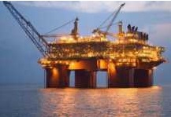

|
 source Energy Mix Report on Nov 10, 2017 Optimum Petroleum Development Ltd, a Nigerian based exploration, development and production company, announced today that it has signed a financing term sheet of USD$850 million with Milost Global Inc, a New York based Private Equity Firm. This is a working capital and development facility for the company which is being provided as a combo of Debt and Equity, of which $700 million will be an equity facility and $150 million will be debt facility. Both the company and the investor are expected to sign a commitment letter by November 8th 2017. The Chief Executive Officer of Optimum Petroleum Development Ltd, Engr. Yusuf K. J. N’jie, stated “Optimum Petroleum Development Company is re-asserting itself by directly raising capital for rapid appraisal/developmental drilling and early production of our OGO field. De-risking of our OGO field and other structures on our asset through appraisal and exploration drilling remains the clearest path of unlocking the said value of our asset. We are very glad to be in partnership with Milost Global Inc, who will be giving us the necessary funds that will make us quickly achieve these goals and also expand our asset portfolio.’s The Senior Partner & President of Milost Global Africa, Solly Asibey, stated “Optimum Petroleum Development Limited has been doing Oil & Gas exploration in Nigeria for more than 20 years, and we are excited to partner with them as they move into full scale production. The capital that we have allocated to Optimum Petroleum will enable them to become a formidable player in the Oil & Gas industry. This transaction will be the first Oil & Gas investment for Milost in Africa, and we are glad to be in partnership with such a dynamic company with seasoned management ’s Managing Partner & CEO of Milost Global Inc., Mr. Mandla J. Gwadiso, added, “This is our first Oil & Gas transaction in Nigeria, optimum has a very solid portfolio of assets and that is what attracted us to the company. The fact that the management of the company is also industry veterans that have not only dedicated their lives in Optimum, but also invested heavily in the company’s development. For any value investor, it is a turn on to find a management that has skin in the game. We truly look forward to a very fruitful relationship with Yusuf and his team. ’s  Source: Press Release |
EPSNL Insights in a collation of Nigeria's oil and Gas Industry news and developments pulled together from various sources to enhance our site's user awareness... Previous Insights
|
||||||
| More Insight |
Fuel scarcity may be imminent as marketers disrupt fuel loadingMembers of the Independent Petroleum Marketers Association of Nigeria on Wednesday disrupted loading of petroleum products at private depots in Apapa as well as Ibadan, Ejigbo and Mosimi depots belonging to the Nigerian National Petroleum Corporation. Our correspondent learnt that the marketers picketed the facilities to protest their inability to get products due to a… Feb 11, 2021 |
Dangote Refinery may rebound Nigeria’s economy – IMFThe Dangote Group has said the International Monetary Fund (IMF), the global financial watchdog, is projecting that Dangote Refinery would help to rebound the economy when it is completed and begins production by 2022. According to a statement from Dangote, it cited the latest IMF report on Nigeria’s economy, with the Fund hopeful that the… Feb 11, 2021 |
BUA Refinery to be ready in 2024 – ChairmanBaring any unforeseen developments in the local and international economy, the 200,000 barrels per day BUA Petroleum Refinery will commence full commercial operation in 2024, after a groundbreaking ceremony billed for May this year. Giving graphic details on the economics of Nigeria’s second largest petroleum refining complex in Lagos at the weekend, Executive Chairman of… Feb 11, 2021 |
|
Shell says its oil production has peaked, lays out detailed energy transition plansRoyal Dutch Shell Plc said its carbon emissions and oil production have peaked and will decline in the coming years as the company laid out a detailed plan for its transition to cleaner energy. In a sign of how much the petroleum industry has shifted away from its mantra of growth and exploration, Shell said… Feb 11, 2021 |